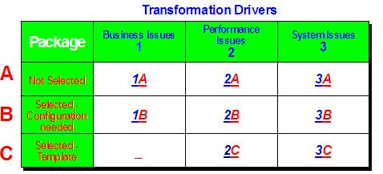
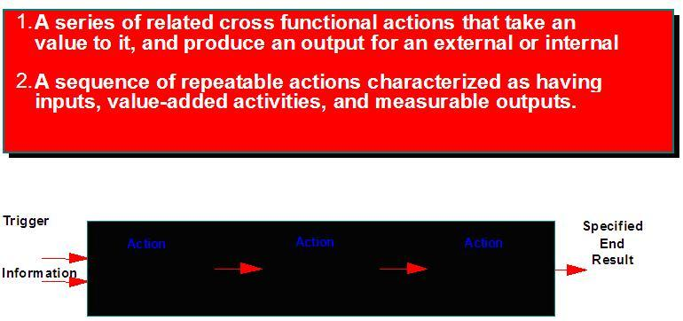

| Guideline: Current Process Definition (PSI) |
 |
|
Introduction
This guideline supplements BUS 309 Process Definition work product and provides additional EAS information to consider when completing this work product. This provides information for completing the current process decomposition and also the process for detailed process documentation. The detailed current descriptions provide the bases, or foundation, for the future descriptions. The BT Script is constructed so the future description of each action is created in the same document as the current description using the same format. Unless a major process improvement was identified from the current, the future description could be almost the same as the current. Therefore work-steps and descriptions documented in the current can be copied to the future.
Steps/Development Approach
1 Current Process Decomposition For each of the Business Domains identified within the scope of the project, identify the sub-process and within each sub-process, define the actions required to complete the process. Business domain decomposition is a logical, visual breakdown of the current, in-scope business domains and sub-processes. Usually, the easiest way to divide the client's business into manageable units is to use a top-down approach. The function tree is used as a means of structuring business functions, where the lowest level is an action. It is used to capture the current and future business requirements, and provides the basis for the choice of the corresponding system functionality. The process breakdown structure is defined by identifying the main business processes and then working top-down to end up with the lowest level that is the action (action). Business Processes vs. Functions Not all package software implementation projects aim at extensive re-engineering of processes. Different competitive environments, corporate culture, organizational structures, and, of course, customer requirements lead to different implementation strategies. It is possible to distinguish between four implementation scenarios:
 Scenario 2A,B&C, Improve efficiency: Client's with moderate BPR requirements Scenario 3A&B, Replace: Customers with very function oriented requirements Scenario 3C, Replace: Customers with a small budget, pre-configured system, and template implementation. The type of customer described in the scenarios determines the approach towards conducting business process re-engineering and process modeling. Modeling is certainly more thorough in projects that include re-engineering. Business models for scenarios 3 tend to be less complex. Scenarios 1 and 2 require the consultant to be concerned with processes, whereas scenarios 3 can be handled taking a functional viewpoint. It is therefore very important to understand how a process can be distinguished from a function:
Some processes, especially in the financial area, are very output-oriented. They are driven by the information that is to be provided, e.g., a report, and in most cases cannot be described the same way as processes in other areas. Therefore, the term "output structure" is used when referring to these processes. Scenario 3: Identify and Describe the Business Functions This way of describing the business is normally used in the following situations:
As the first step, it is necessary to agree upon and describe the individual functional views of the client's business as a basis for project work. A business functional view is a major group within the organization and includes such views as:
All project members and project management must agree upon the definition of the main business functions. Often the first part of the project has already identified these major functional areas, as well as, the business processes that cross them. This is done during the preparation phase in order to identify the scope of business functionality to be implemented and the corresponding system areas. Once the business functions are defined and agreed upon, a project team member is assigned responsibility for each main view. In some cases, they are labeled Sub-Projects. Sometimes, an individual team may have responsibility for more than one business function. For example, the Finance Sub-Project Leader may have responsibility for Accounts Payable, Accounts Receivable, and General Ledger. The business functions represent the major segments of the project. They are the basis for the Project Organization. Identify and Describe the Business Sub-functions The second step is to identify the function tree within each functional view. Each business function contains a number of sub-functions. For example, within the business function Purchasing, there may be the sub-function Supplier Selection and Maintenance of Orders. In order to do this IBM's sample list of functions can be used. Using a 'top down' approach, each team member reviews and understands the functional view(s) assigned to him or her. If the team member has the relevant business experience, the ideal would be for them to define the sub-processes within the functional views and to create a Value Added Chain diagram or an EPC diagram. The diagrams should show:
Identify and Describe the Actions Every sub-process or function should be divided into actions. Actions can contain details of both normal and exceptional variations. For example, the Creation of a Purchase Order for an item might be the main action where the Creation of a Purchase Order for a service, might be a variation. Scenarios 1 and 2: Identify and Describe the Business Processes In the past, the focus was on verbal descriptions of a function- oriented view of the company. This, however, does not provide an easily understandable and accessible description of Future requirements. Furthermore, the present focus on cross-functional business processes is not supported by the traditional function-oriented view of the company. First, agree on and describe the individual business process views of the client's business as a basis for the project work. A business process view is:

All project members and Project Management must agree upon the definition of the business processes. Often the first part of the project has already identified business domains as well as business processes. This is done during the preparation phase in order to identify the scope of the project. Once the business processes are defined and agreed upon, a project team member should be assigned responsibility for each business process. In some cases, they are labeled Sub-Projects. Sometimes, an individual team may have responsibility for more than one business process. For example, the Finance Sub-Project Leader may have responsibility for Manage cost accounting. The business processes represent the major segments of the project. They are the basis of the Project Organization. Identify and Describe the Business Sub-processes The second step is to identify the process tree within each process view. Each business process contains a number of sub-processes. For example, within the business process Manage Procurement of products and services, there will be the sub-process manage Supplier Selection and Manage contracts. Using a 'top down' approach, each team member should review and understand the process view(s) assigned to him or her. If the team member has the relevant business experience, the ideal would be for them to define the sub-processes within the process views and to create a Value Added Chain diagram or an EPC diagram. The diagrams should show:
Identify and Describe the Actions Every sub-process or function should be divided into actions. Actions can contain details about both normal and exceptional variations. For example, the Creation of a Purchase Order for an item might be the main action where the Creation of a Purchase Order for a service, might be a variation. 2 Current Detailed Process Documentation 2.1. Overview The Business Transaction Folder provides a complete vehicle for concurrent Business Process and Application Design & Documentation, which flows through from the Business Assess Phase to the Implement Phase. This is a powerful tool, which ensures that the design of Business Processes is based on the Application and that the Application design is business driven and provides an understandable set of integrated business processes and system design documentation. This is a major benefit in a project as complex as most system software implementations. Within the Business Transaction Folder are three main Scripting documents that cover each stage of the project. BT Script Each script is created at the action level and contains, per action, the Current description, the Future descriptions, and the Fit/Gap System Mapping. BT Configuration Script Each script is linked back to a corresponding Script and contains the detailed system set-up information. The configuration scripts document how the system was built to fulfill the requirements defined in the Future portion of Scripts. BT Unit Testing Script Each script is linked back to a corresponding Configuration Script and contains the system testing expectations and results for the particular action and set-up. At this stage of the project, this testing is strictly action based and completed to validate that each individual action is functioning as expected.
The following is a blank template of the BT Script and can be found in the Method Catalog. Together with 3 level Current Business Model the detailed documentation, of the level 3 (actions), within a Business Transaction Script produces an end product known as the Current Model. A BT Script contains the following three sections, or deliverables:
The first section, and deliverable here, is the completion of the Current Description portion of the Script. The Current descriptions should validate and clarify how the customer currently conducts business. It is important to know where the company is coming from in order to accurately, and effectively, recommend process and business improvements for the future. 2.1.2 Prerequisite Prior to beginning the detailed Current documentation, a functional or process decomposition (Current Business Model) should have been completed and signed-off by the business. There are multiple steps involved in identifying and breaking down the Current processes and functions into manageable working units. The actual breakdown is often defined as a functional or process decomposition. The decompositions can be completed in either a functional or process view. Both ways are acceptable and allow the business to obtain the level of required detail. Level 4 Documentation Not all processes need a level 4 description. Only the following processes shall be documented at this level of detail.
2.1.3 Identifying the BT Scripts After completing the decompositions where all of the actions have been identified, a BT Script is then created for each action from the selected processes. Most BT Scripts will be created at the action level. However, there are some cases where the script will be created at the sub-process or sub-function level. This will depend on the number and uniqueness of actions within the sub-process.
Each action should be evaluated, at a high-level, to assess if there will be enough information to warrant script. This
is usually a first instinct judgment call by the project team member responsible for that area. The scripts will
fluctuate and change as the project progresses. There will be cases where some scripts are added because they were
forgotten or maybe a script is divided and made into two separate scripts. 2.1.4 Establish Numbering and File Naming Conventions for the Scripts A file naming and script numbering system must be established and communicated to the project team. This must happen before you actually begin creating the Scripts. Typically, the scripts are numbered based on process/functional area and level of detail. Each functional area or process is given a top-level number usually based on tens.
Each sub-function/process below a Main Function/Process is also given a sequential number
Lastly, each action under the sub-function/process is given a sequential number
These numbers are used as the individual script numbers to identify the level and area that a script belongs to. Often, these numbers are also used as the file names for each document. This was mainly applicable when file names were limited to eight characters. If the company is using a file storage system of software that enables extended file names, a more descriptive file naming convention may be used. Because the Script is just one of the BT Scripts used to obtain the end-to-end project and system information, these script numbers should also be proceeded by the letter P. As the Business Transaction Folder is assembled, each script will have an identifying first letter to distinguish it between a Process, Configuration, or Unit Testing Script. The following is a spreadsheet example of how the script numbering system is applied to the identified actions:
In this step, the Current Description portion of the Script is complete. The script itself documents the detailed worksteps required to carry out the action. The worksteps are the step-by-step activities that must take place in order to complete the action. The Client must provide the Current information. The approach for obtaining this information can vary depending upon the project team members background, knowledge, and skills. Some project teams will contain members who have current experience working in end-user departments and therefore they would be required to interview user representatives. This will need to be assessed on and individual and project bases. For each BT Script that was identified, the project team owner for each area should create a first pass of the script entering as much as possible of the Current Information before interviewing the user representatives. This approach will shorten the creation process, by providing the user representatives with a basis for validation and sign-off. It may also be possible to gather information from procedural handbooks or system guides. However, care must be taken, as this written information might not reflect the actual procedures followed, or may be out of date. 2.1.6 Identify User Representatives and Schedule Interviews Interviews should be conducted with user representatives in each business area. The interviews should be used as a means to validate the Current descriptions and to obtain any information that is unknown to the project team member. User representatives should be chosen with care and should be at a responsible level within the organization. A good approach is to contact the department manager first to establish who should be interviewed. In some cases, it may be sufficient to interview the department manager in order to obtain the necessary information. You must always conduct at least one interview / review with an actual 'doer' to avoid or detect potential issues in describing the Current situation and worksteps. 2.1.7 Conduct User Representative Interviews Again, the interviews should be used to validate business process functions, sub-business functions and actions. Use the IBM standard Script template and guidelines (See Attachment A7). The interview questions should seek to establish the following information:
While carrying out the interviews, it may be easier to capture the information on blank paper rather than actually trying to fill in the Script form. This will allow everything to be recorded for later consolidation and restructuring in the Script. 2.1.8 Complete and Finalize the Current Portion of the BT Scripts After all interviews are completed, the project team members must complete the Current Information for each BT Script allocated to them. They should add any new information and consolidate the information where appropriate. It is recommended that team members be proficient in the use of word processing tools and the software that is being used to document the BT Scripts. Otherwise, project management needs to arrange the appropriate training, and if necessary, short-term secretarial help. All the Business Transaction Scripts should be collated and managed centrally. Team members will be responsible for maintaining / updating their own scripts, but should also have display access to all scripts allocated to other teams. 2.1.9 Complete an Integration Matrix An Integration Matrix is a detailed spreadsheet listing all of BT Scripts and ID numbers that are connected to each script. When the Current descriptions are being completed, a field on the front of the script allows the script creator to identify all scripts that are "integrated" or affected by the current script. By listing all of these in a matrix, you can identify all of the integration points between the business processes. |
| Supporting Materials |
|---|
| © Copyright IBM Corp. 1987, 2012 All Rights Reserved Property of IBM These materials are intended only for use as part of an IBM engagement |